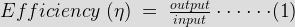
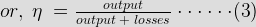

The testing of dc machine is needed for proper fabrication and smooth trouble free operation. The tests which are mainly needed for these purposes are…
- Open circuit test
- Short circuit test
- Load test
- Determination of efficiency
- Direct method
- Indirect method
- Regenerative method
Open Circuit Test
The open circuit test is needed to determine the open circuit characteristic or magnetizing characteristic of a dc machine. The open circuit test gives the mmf and hence the excitation electric current or field electric current needed to generate the required voltage on no load at a fixed speed. The open circuit characteristic curve shows the variation of induced emf as a function of field electric current at constant speed and zero load current. This curve is practically determined by running the machine as a separately excited generator on on-load. This curve is also called no load saturation curve as it gives the saturation characteristic of the generator.
Short Circuit Test
The short circuit test is needed to determine the voltage drop across the armature at any load current. In this testing of DC machine the armature is short circuited with an ammeter to get the short circuit current. Short circuit test gives the short circuit characteristic curve which shows the variation of short circuit electric current as a function of excitation current.
Load Test
The load testing of DC machine is needed to determine the rating of a machine. When we run a machine, then some energy is lost in the machine, which converts into the heat and cause temperature rise. If a machine produces too much heat then it can affect the insulation of the machine and ultimately it can cause the breakdown of the machine. Therefore, the load must be set to a value that it can operate within the temperature limit. The maximum value of the load that can be delivered by the machine without any harm is called the continuous rating of that machine.
Determination of Efficiency
The efficiency of DC machine like any other machine is determined by the ratio of output power to that of the input power.

")

There are three methods of determining the efficiency of a machine.
The 1st equation is giving an idea about the direct estimation of the efficiency. In this method the machine is fully loaded and the output is directly measured. This method of measurement is only applied for the small machines.
The 2nd and 3rd equations are giving an idea about the indirect estimation of the efficiency. Indirect method is helpful of determining the efficiency of shunt wound generator and compound wound generators. In this method it is required to determine to determine the losses only. So, power supply is required to supply the losses only without loading the machine.
For the regenerative method of determining efficiency, it is required to have two identical machines. One machine is used as motor and drives the other and the other is used as generator and feedback the power into the supply. Two machines are mechanically coupled. Therefore the losses can be determined because the internal power drawn is only to supply losses of the two machines.
Except these testes, the insulation test and the test for making the commutation satisfactory is done while building up the machine.
 by
by